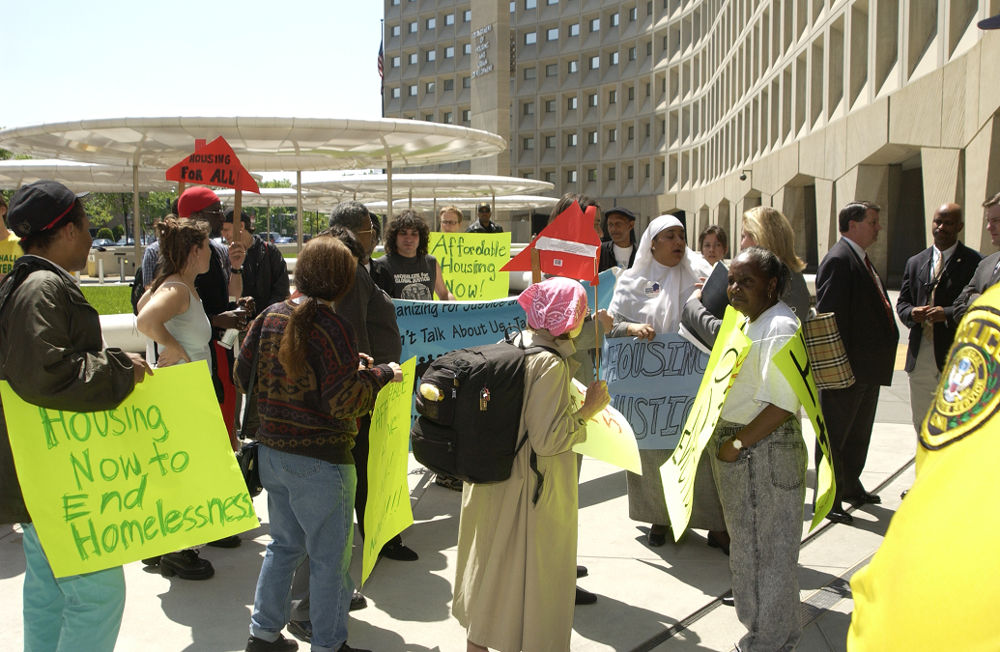

The United States Of America has experienced homelessness in more than one occasion. The most famous example is the 1930’s
“The Great Depression” era in which the homeless were often seen as poor, with nothing to eat and no places to sleep. Then between 1933 and 1939 major federal programs like the CCC, CWA, FSA, NIRA and SSA were developed to combat homelessness. These marked the end of the great depression. Though it did not get rid of homelessness, it did reduce it significantly, so problem solved,
right? 
Well the year 2002 would beg to differ since they were another spike in homelessness. However, it was mostly children and families were now the largest demographic of homeless. The government had already given its ideas to end homelessness and now turned to major cities to bring a solution once more. Through this, the “Housing First” program was created. It was a way to rapidly relocate the homeless by giving them access to housing without having to go through sobriety or drug use tests. This movement underwent many criticisms some thought that it was a way for drug addicts to set up drug points but in the end, the program was funded by previously homeless individuals that got their barrings.

This seems like a solution however, many people today are still homeless, and even more are youth than ever before.To better understand how to solve the problem, we must first know the common causes. In the United States of America the causes of homelessness are usually:
- Gentrification: when a formerly affordable neighborhood becomes popular raising housing prices and pushing poorer residents out.
- Internal Displacement: Sometimes governments will force residents away from their permanent residences to make way for higher-priced Buildings, while compensation may be inadequate for the residents to acquire adequate housing.
- Medical: Lack of accessible healthcare can drive homelessness, physical disabilities especially can impact a person's ability to support house payments, mortgages, or rent.
- Human and natural disasters: Events like hurricanes, earthquakes, tsunamis, tornadoes and war can cause poverty and homelessness.
- Foster Care: Transitions from foster care can also impact homelessness. Specifically, youth who have been involved in the health care who leave the system often do not have a stable income or support if any at all which forces them on the streets
- Substance abuse: Different substancas can cause harmful dependancies that lead to health and living situation complications.
So, how do we solve this homelessness crisis? Well, the answer is a bit complicated. Not including state-level help, the ACF, CMS, and SAMHSA and their programs are federal help across the USA from homeless children and runaway youths to struggling adults. Let’s first look at current governmental aids, grants and programs to help prevent homelessness countrywide:
Administration for children and families (ACF)
Runaway and Homeless Youth Programs
Basic Center Program
Transitional Living Program for Older Homeless Youth
Street Outreach Program
Child Support Enforcment Program
Community Services Block Grant
Family violence Prevention and Services Gran Program
Head Start
Social Services Block Grant
Temporary Assistance for Needy Families
Child Care and Development Fund
Tribal Home Visiting
Title V Federal Real Property Assistance Program
Centers for medicare and medicaid services (CMS)
Medicaid
Children's Health Insurance Program
Healthcare for the Homeless
Maternal and Child Health Services Block Grant
Community Health Center Program
Ryan White HIV/AIDS Treatment Program
Substance abuse and mental health services administration (SAMHSA)
Projects for Assistance in Transition from Homelessness (PATH)
Grants for Benefit of Homeless Individuals (GBHI)
Treatment for Individuals Experiencing Homelessness (TIEH)
SSI/SSDI Outreach, Access, and Recovery (SOAR)
Community Mental Health Services Block Grant
Substance Abuse prevention and treatment Block Grant(SABG)
State Opioid Response (SOR)
Tribal Opioid Response (TOR) In addition to all of this help, states are encouraged to help in different ways such as Texa's "Guaranteed Income" in which they provide pay for families in risk of loosing their homes, the many charities that aim to tackle homelessness and provided homeless shelters. While there is no "end all be all" solution to homelessness, it's important for the country to try and reduce the amount of homeless and make sure it's citizens are cared for. It's also important for us as a society to aim to help others in any way we can. Resources and more info on all these programs can be found in the U.S. Department of Health and Human Services (HHS)
By: Andrea S. Flecha Mulero